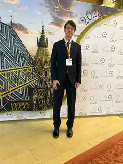

Consultation
We discuss your goals, clinical history and specialist assessment.
Associate Professor and Consultant Plastic Surgeon with international experience in aesthetic and reconstructive surgery and particular expertise in lymphedema microsurgery. Consultations and surgery in Modena.

About
MD | Specialist in Plastic, Reconstructive and Aesthetic Surgery (FRCS Plast equivalent) | MSc in Reconstructive Microsurgery | PhD | Associate Professor of Plastic Surgery
UK GMC 7341384 · Specialist Register for Plastic Surgery since January 2019
I am an Associate Professor of Plastic Surgery at the University of Modena and Reggio Emilia and a Consultant Plastic Surgeon at the University Hospital of Modena, with over 10 years of clinical and academic experience. My practice encompasses Aesthetic Surgery, Reconstructive Microsurgery and Lymphedema Surgery.
Following extensive international training, a Master’s degree and a PhD in Reconstructive Microsurgery, with a particular research focus on lymphedema surgery, I worked in the United Kingdom at The Royal Marsden Hospital in London and the St Andrew’s Centre for Plastic Surgery and Burns at Broomfield Hospital in Chelmsford.
Since 2023, I have been Associate Professor of Plastic Surgery at the University of Modena and Reggio Emilia. Alongside my academic, teaching and research responsibilities, I maintain an active clinical and surgical practice at the University Hospital of Modena, where I see patients and perform surgery.
In Aesthetic Surgery, my aim is to achieve balanced, natural and harmonious results while respecting each patient’s anatomy and individual characteristics.
Every treatment journey begins with listening. During consultation, I take the time to understand each patient’s concerns and expectations and to explain clearly what can realistically be achieved, as well as the possibilities and limitations of each procedure. I believe that informed decisions, transparent communication and a relationship of trust between surgeon and patient are essential to achieving a successful surgical outcome.
My clinical practice is closely connected with scientific research and university teaching. I regularly publish research and surgical outcomes in international peer-reviewed journals, allowing my work and results to be shared and evaluated within the scientific community.
Aesthetic Surgery
A personalised approach to aesthetic surgery, respecting each patient’s anatomy, proportions and individual characteristics.
Procedures focused on facial harmony and rejuvenation.
02Aesthetic breast surgery and personalised reshaping.
03Silhouette refinement and body contouring procedures.
04Surgical treatments focused on shape, volume and proportion.
05Intimate procedures delivered with discretion and an individualised approach.
06Non-surgical treatments designed for natural, harmonious results.
Your Journey
We discuss your goals, clinical history and specialist assessment.
A personalised plan, alternatives and realistic expectations.
Your selected surgical or therapeutic pathway.
Clinical reviews and long-term outcome monitoring.
Microchirurgia del Linfedema
Lymphedema is not treated with a one-size-fits-all approach. Imaging and staging guide the choice between conservative therapy, LVA/LVB and VLNT for each individual limb.
Explore lymphedema treatmentResearch & international activity
Contact
For clinical, academic or professional enquiries.